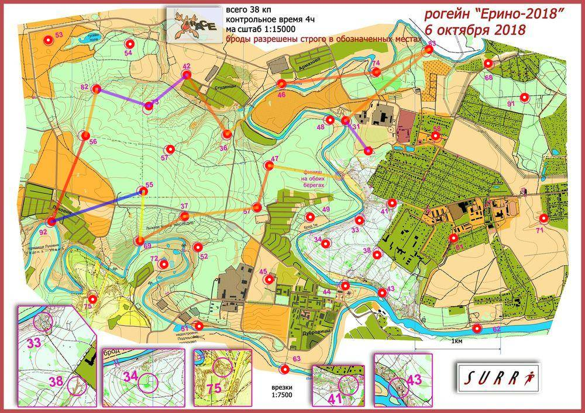

Рогейн Ерино 6.10.18
| Участники | Лазарева Светалана
|
| Группа | Ж4Б |
| Место | 6 |
| Очки | 81 |
| Штраф | 0 |
| Время | 03:59:59 |
| Результат | 81 |
| КП | Время | Сплит | Расстояние, км | Темп, мин/км |
|---|
| С | 12:00:00 | | | |
| 31 | 12:14:18 | 00:14:18 | 0.437 | 32.7 |
| 83 | 12:34:30 | 00:20:12 | 1.282 | 15.8 |
| 74 | 12:44:46 | 00:10:16 | 0.669 | 15.3 |
| 46 | 13:04:22 | 00:19:36 | 1.111 | 17.6 |
| 36 | 13:15:52 | 00:11:30 | 0.862 | 13.3 |
| 42 | 13:29:40 | 00:13:48 | 0.838 | 16.5 |
| 73 | 13:49:34 | 00:19:54 | 0.573 | 34.7 |
| 82 | 14:12:57 | 00:23:23 | 0.64 | 36.5 |
| 56 | 14:20:47 | 00:07:50 | 0.558 | 14.0 |
| 92 | 14:43:02 | 00:22:15 | 1.076 | 20.7 |
| 55 | E | E | 1.126 | 178.9 |
| 69 | 15:18:33 | E | 0.579 | <1 |
| 37 | 15:28:28 | 00:09:55 | 0.599 | 16.5 |
| 59 | 15:40:33 | 00:12:05 | 0.855 | 14.1 |
| 47 | 15:49:13 | 00:08:40 | 0.507 | 17.1 |
| Ф | 15:59:59 | 00:10:46 | 0.838 | 12.9 |
| | | 03:59:59 | 11.972 км | 20.0 мин/км |
|---|
